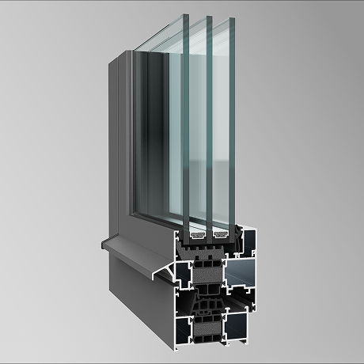
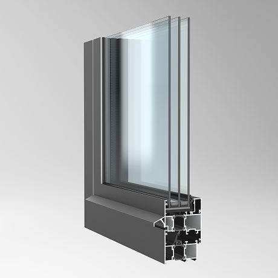
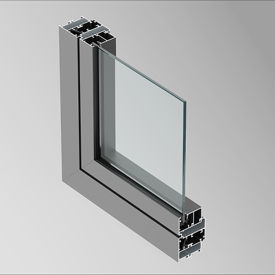
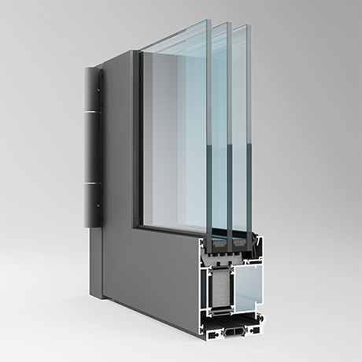
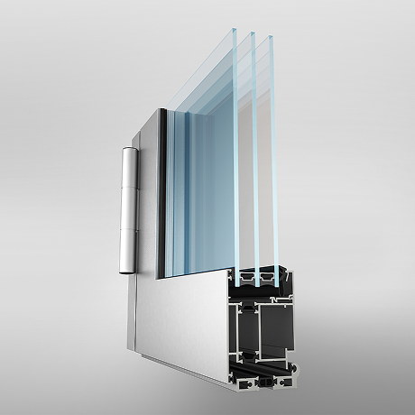
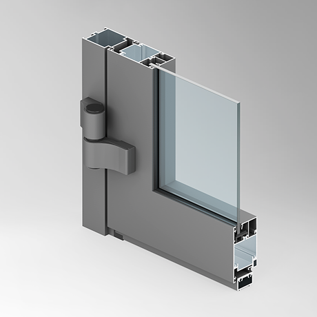
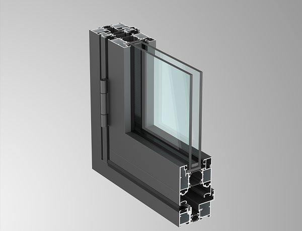

КОМПЛЕКСНЫЕ РЕШЕНИЯ ДЛЯ СВЕТОПРОЗРАЧНЫХ КОНСТРУКЦИЙ
ЗАЯВКА НА РАСЧЕТО нас
Мы создали бренд АлюТерра, чтобы объединить все алюминиевые
изделия.
АлюТерра — бренд компании с 27-летним
опытом в оконной индустрии. Мы производим алюминиевые окна и
двери, которые меняют пространство к лучшему и служат долго. Под
единым брендом линейка становится понятнее: вам проще сравнивать
решения и выбирать подходящее. АлюТерра — это надежность и
качество, проверенные временем.
Ценности бренда

НАДЕЖНОСТЬ И ДОЛГОВЕЧНОСТЬ
Мы создаем конструкции, которые служат десятилетиями и выдерживают любые испытания временем и климатом

ПРОФЕССИОНАЛИЗМ И ОПЫТ
За каждым пректом стоит 27 лет практики, знания специалстов и уверенность в результате

ИНДИВИДУАЛЬНЫЙ ПОДХОД
Каждое решение мы создаем под задачи клиента, учитывая его стиль, архитектуру и требования к функциональности
ОТВЕТСТВЕННОСТЬ ЗА КАЧЕСТВО
Каждая деталь проходит контроль, чтобы клиент получал не просто конструкцию, а уверенность в ее надежности
ОКНА из алюминия
Алюминиевые окна АлюТерра— это воплощение современных технологий
остекления, сочетающее в себе функциональность, эстетику и
практичность. Конструкции изготавливаются из высокопрочных
алюминиевых профилей, способных выдерживать значительные нагрузки
при минимальном весе.
Главное достоинство таких окон заключается в их исключительной
долговечности — они сохраняют свои эксплуатационные характеристики
на протяжении десятилетий, не подвержены коррозии и деформации.
Универсальность применения алюминиевых окон поражает: они идеально
подходят как для жилых помещений, так и для коммерческих объектов,
промышленных зданий и архитектурных комплексов. Широкий выбор типов
открывания (поворотные, поворотно-откидные, раздвижные) позволяет
реализовать любые дизайнерские решения.
Современные технологии позволяют создавать окна различных форм и
размеров — от классических прямоугольных до трапеций и эркерных
конструкций. Возможность использования различных видов остекления
делает их особенно востребованными в современном строительстве.
Экономическая эффективность алюминиевых окон обусловлена низкими
затратами на обслуживание, длительным сроком службы и высокой
энергоэффективностью. При этом конструкции остаются абсолютно
экологичными и безопасными для здоровья.
AluTerra Comfort +
AluTerra Classic
AluTerra Light
ДВЕРИ межофисные и входные
Алюминиевые двери АлюТерра - это высокотехнологичные конструкции,
изготовленные из современных алюминиевых профилей, которые сочетают
в себе прочность, долговечность и эстетическую привлекательность.
Благодаря уникальным свойствам материала, такие двери
обладают исключительной надёжностью — они не подвержены коррозии,
устойчивы к механическим повреждениям и сохраняют первоначальный
внешний вид на протяжении всего срока службы.
Важным преимуществом является универсальность применения:
алюминиевые двери успешно используются как в жилых помещениях, так и
в коммерческой недвижимости, общественных зданиях и промышленных
объектах. Они доступны в различных вариантах исполнения, с разным
подбором фурнитуры.
Современные технологии позволяют создавать конструкции с отличной
тепло- и звукоизоляцией, при этом сохраняя лёгкость и удобство
эксплуатации. Материал абсолютно экологичен, негорюч и безопасен для
здоровья.
Дизайн алюминиевых дверей отличается разнообразием: возможность
использования различных видов остекления, цветовых решений по шкале
RAL и декоративных покрытий делает их идеальным выбором для
реализации любых архитектурных замыслов.
Экономическая эффективность таких конструкций обусловлена низкими
затратами на обслуживание, длительным сроком эксплуатации и высокой
энергоэффективностью, что делает их выгодным вложением в комфорт и
безопасность любого помещения.
AluTerra Comfort +
- теплозащите помещений;
- звукоизоляции внутренних пространств;
- долговечности эксплуатации;
- устойчивости к внешним воздействиям.
AluTerra Classic
AluTerra Light
ПОРТАЛЫ - раздвижные двери больших размеров и гармошки
Алюминиевые раздвижные системы - это инновационное решение для
организации пространства, включающее крупноформатные раздвижные
конструкции АлюТерра Портале и популярные двери типа «гармошка»
АлюТерра Фолд . Эти современные конструкции способны преобразить
любое помещение, создавая эффектный архитектурный акцент.
Масштабные раздвижные порталы АлюТерра Портале впечатляют своими
габаритами и функциональностью — они могут трансформироваться под
различные задачи, освобождая максимум пространства при открывании.
При этом в закрытом состоянии они обеспечивают отличную тепло- и
звукоизоляцию, не уступая традиционным оконным системам.
Особенность дверей-гармошек АлюТерраФолд заключается в их
универсальности: можно открывать как все створки одновременно, так и
отдельные секции, что особенно удобно для контроля микроклимата
помещения. Конструкции комплектуются надёжными механизмами с плавным
ходом и могут оснащаться различными типами порогов.
Преимущество систем заключается в их практичности: они устойчивы к
коррозии, просты в уходе, пожаробезопасны и экологичны.
Широкая сфера применения включает как внутреннее зонирование
помещений, так и наружное использование — от частных домов и
ресторанов до торговых центров и зимних садов. При этом конструкции
гармонично вписываются в любой архитектурный стиль.
Современные технологии позволяют создавать изделия в различных
цветовых решениях по шкале RAL, что даёт возможность реализовать
самые смелые дизайнерские идеи и создать уникальный облик
пространства.
AluTerra Portale

AluTerra Fold
ФАСАДНОЕ ОСТЕКЛЕНИЕ
Конструктивные особенности системы включают прочный алюминиевый каркас с возможностью остекления значительных площадей фасада, при этом материал в 7 раз прочнее дерева и в 2 раза — ПВХ, что позволяет создавать масштабные светопрозрачные конструкции для высотных зданий.
Ключевые преимущества такого решения заключаются в:
- высокой энергоэффективности благодаря современным стеклопакетам
- тличной светопропускаемости, снижающей затраты на искусственное освещение
- долговечности службы (до 80-90 лет)
- устойчивости к атмосферным воздействиям
- пожаробезопасности материала
Универсальность применения делает алюминиевые фасады оптимальным выбором для бизнес-центров и офисных зданий, торговых комплексов, жилых высоток, спортивных сооружений, частных домов.
AluTerra Facade

Классическое фасадное остекление АлюТерра Фасад представлено системой F50 предназначено для создания ограждающих светопрозрачных конструкций разной степени сложности. Профили системы обеспечивают максимальную прозрачность и визуальную легкость конструкции за счет оптимальной конфигурации и возможности реализации различных узловых решений. Система предназначена для изготовления легких стеновых ограждений, наклонных светопрозрачных покрытий, куполов, зимних садов и других пространственных конструкций. Каркасом несущей конструкции являются стойки и ригели. Поддержание комфортной температуры в помещении. Экономия на отоплении и кондиционировании. Отсутствие риска выпадения конденсата на внутренней части фасада. Исключение промерзания помещения.
ИНТЕРЬЕРНЫЕ ПЕРЕГОРОДКИ из алюминия
Интерьерные алюминиевые перегородки АлюТерра Дизайн — это
современное решение для эффективного зонирования пространства,
сочетающее функциональность, эстетику и практичность.
Конструктивные особенности обеспечивают высокую прочность при
минимальном весе. Особую функциональность придаёт возможность
интеграции дверей.
Ключевые преимущества перегородок включают долговечность (до 50 лет
эксплуатации), устойчивость к механическим воздействиям, простоту
монтажа и демонтажа, а также возможность быстрой перепланировки
пространства. Интегрированные двери могут быть оснащены
автоматическими механизмами открывания, что особенно актуально для
общественных пространств.
Дизайн-потенциал систем впечатляет разнообразием: от классических
прямых линий до сложных архитектурных форм, с возможностью
использования различных типов заполнения (стекло, панели, текстиль)
и окраски в любые цвета по шкале RAL.
Практическое применение перегородок охватывает офисные пространства,
торговые центры, образовательные учреждения и жилые помещения, где
они не только выполняют функцию зонирования, но и становятся важным
элементом дизайна. Интегрированные двери позволяют создавать гибкие
пространства с возможностью быстрого изменения конфигурации.
Экономическая эффективность решения обусловлена низкими затратами на
обслуживание, длительным сроком службы и возможностью многократной
перепланировки без значительных финансовых вложений.ым выбором для
бизнес-центров и офисных зданий, торговых комплексов, жилых высоток,
спортивных сооружений, частных домов.
AluTerra Design
Интеръерные перегородки АлюТерра Дизайн представлены в системаз
110 и 111.
Предназначены для обустройства рабочего пространства. Помогают
делить помещения на функциональные зоны, создавая комфортные
условия труда для сотрудников. Используются для организации
рабочего пространства в торговых залах, выставочных центрах
и офисных помещениях. Возможны различные варианты исполнения
дверей — алюминиевые, деревянные, цельностеклянные.